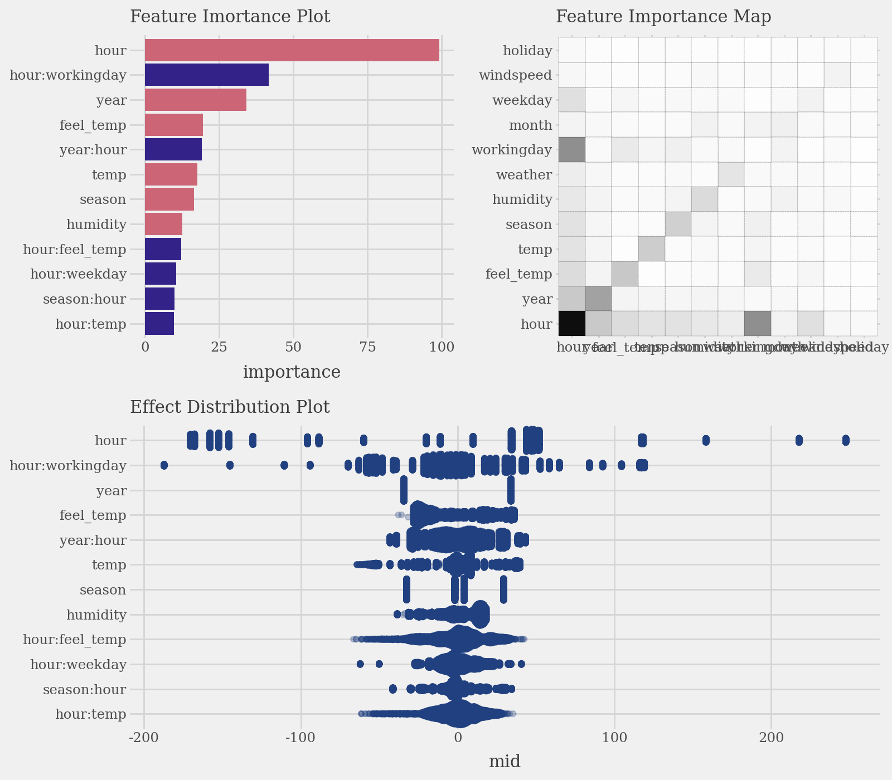
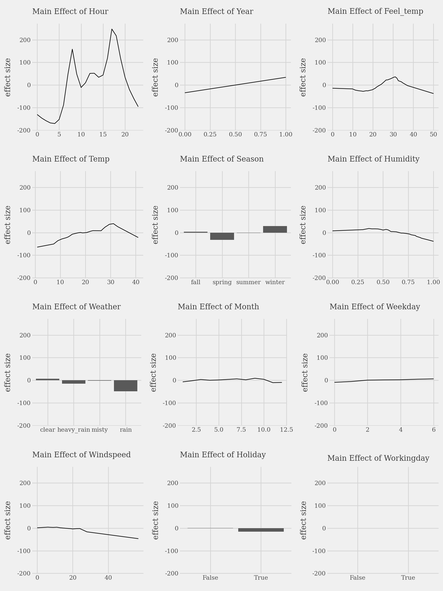
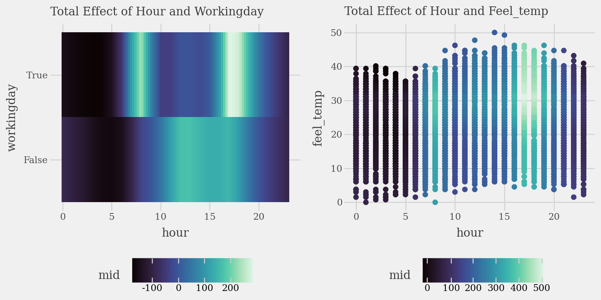
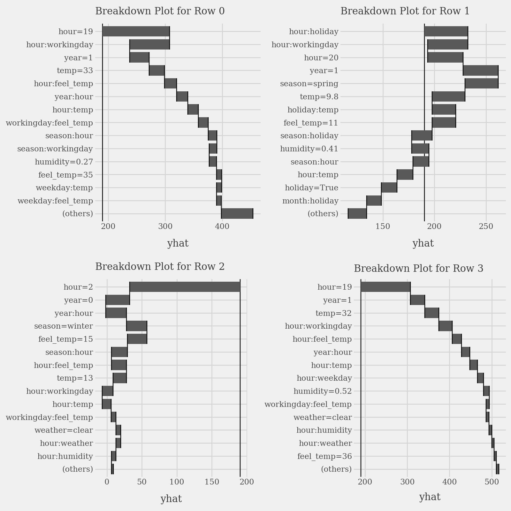
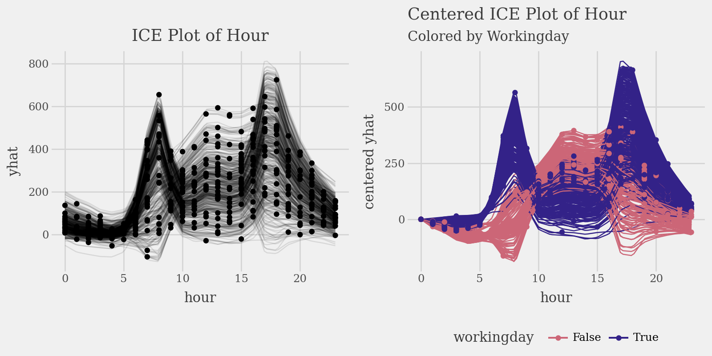

Quick Start
Here’s a basic example of how to use midlearn to explain a trained LightGBM model, utilizing the familiar scikit-learn API.
import pandas as pd
from sklearn.model_selection import train_test_split
from sklearn.metrics import root_mean_squared_error
from sklearn.datasets import fetch_openml
import lightgbm as lgb
import midlearn as mid
# Set up plotnine theme for clean visualizations
import plotnine as p9 # require plotnine >= 0.15.0
p9.theme_set(p9.theme_538(base_family='serif'))
Error importing in API mode: ImportError('On Windows, cffi mode "ANY" is only "ABI".')
Trying to import in ABI mode.
1. Train a Black-Box Model
We use the California Housing dataset to train a LightGBM Regressor, which will serve as our black-box model.
# Load and prepare data
bikeshare = fetch_openml(data_id=42712)
X = pd.DataFrame(bikeshare.data, columns=bikeshare.feature_names)
y = bikeshare.target
X_train, X_test, y_train, y_test = train_test_split(X, y, random_state=42)
# Fit a LightGBM regression model
estimator = lgb.LGBMRegressor(
force_col_wise=True,
n_estimators=500,
random_state=42
)
estimator.fit(X_train, y_train)
[LightGBM] [Info] Total Bins 283
[LightGBM] [Info] Number of data points in the train set: 13034, number of used features: 12
[LightGBM] [Info] Start training from score 190.379623
LGBMRegressor(force_col_wise=True, n_estimators=500, random_state=42)In a Jupyter environment, please rerun this cell to show the HTML representation or trust the notebook.
On GitHub, the HTML representation is unable to render, please try loading this page with nbviewer.org.
Parameters
| boosting_type | 'gbdt' | |
| num_leaves | 31 | |
| max_depth | -1 | |
| learning_rate | 0.1 | |
| n_estimators | 500 | |
| subsample_for_bin | 200000 | |
| objective | None | |
| class_weight | None | |
| min_split_gain | 0.0 | |
| min_child_weight | 0.001 | |
| min_child_samples | 20 | |
| subsample | 1.0 | |
| subsample_freq | 0 | |
| colsample_bytree | 1.0 | |
| reg_alpha | 0.0 | |
| reg_lambda | 0.0 | |
| random_state | 42 | |
| n_jobs | None | |
| importance_type | 'split' | |
| force_col_wise | True |
model_pred = estimator.predict(X_test)
rmse = root_mean_squared_error(model_pred, y_test)
print(f"RMSE: {round(rmse, 6)}")
RMSE: 37.615267
2. Create an Explaination Model
We fit the MIDExplainer to the training data to create a globally faithful, interpretable surrogate model (MID).
# Initialize and fit the MID model
explainer = mid.MIDExplainer(
estimator=estimator,
penalty=.05,
singular_ok=True,
interactions=True,
encoding_frames={'hour':list(range(24))}
)
explainer.fit(X_train)
Generating predictions from the estimator...
R callback write-console: singular fit encountered
MIDExplainer(encoding_frames={'hour': [0, 1, 2, 3, 4, 5, 6, 7, 8, 9, 10, 11, 12,
13, 14, 15, 16, 17, 18, 19, 20, 21, 22,
23]},
estimator=LGBMRegressor(force_col_wise=True, n_estimators=500,
random_state=42),
penalty=0.05, singular_ok=True)In a Jupyter environment, please rerun this cell to show the HTML representation or trust the notebook. On GitHub, the HTML representation is unable to render, please try loading this page with nbviewer.org.
Parameters
| estimator | LGBMRegressor...ndom_state=42) | |
| target_classes | None | |
| params_main | None | |
| params_inter | None | |
| penalty | 0.05 | |
| link | None | |
| kernel_type | 1 | |
| encoding_frames | {'hour': [0, 1, ...]} | |
| model_terms | None | |
| singular_ok | True | |
| mode | 1 | |
| method | None | |
| centering_penalty | 1000000.0 | |
| na_action | 'na.omit' | |
| verbosity | 1 | |
| split | 'quantile' | |
| digits | 3 | |
| lump | 'none' | |
| others | 'others' | |
| sep | '>' | |
| max_nelements | 1000000000.0 | |
| nil | 1e-07 | |
| tol | 1e-07 |
LGBMRegressor(force_col_wise=True, n_estimators=500, random_state=42)
Parameters
| boosting_type | 'gbdt' | |
| num_leaves | 31 | |
| max_depth | -1 | |
| learning_rate | 0.1 | |
| n_estimators | 500 | |
| subsample_for_bin | 200000 | |
| objective | None | |
| class_weight | None | |
| min_split_gain | 0.0 | |
| min_child_weight | 0.001 | |
| min_child_samples | 20 | |
| subsample | 1.0 | |
| subsample_freq | 0 | |
| colsample_bytree | 1.0 | |
| reg_alpha | 0.0 | |
| reg_lambda | 0.0 | |
| random_state | 42 | |
| n_jobs | None | |
| importance_type | 'split' | |
| force_col_wise | True |
# Check the fidelity of the surrogate model to the original model
p = p9.ggplot() \
+ p9.geom_abline(slope=1, color='gray') \
+ p9.geom_point(p9.aes(estimator.predict(X_test), explainer.predict(X_test)), alpha=0.5, shape=".") \
+ p9.labs(
x='Prediction (LightGBM Regressor)',
y='Prediction (Surrogate MID Regressor)',
title='Surrogate Model Fidelity Check',
subtitle=f'R-squared score: {round(explainer.fidelity_score(X_test), 6)}',
)
display(p + p9.theme(figure_size=(5,5)))
Generating predictions from the estimator...
3. Visualize the Explanation Model
The MID model allows for clear visualization of feature importance, individual effects, and local prediction breakdowns.
# Calculate and plot overall feature importance (default bar plot and heatmap)
imp = explainer.importance()
p1 = (
imp.plot(max_nterms=12, theme = 'muted') +
p9.labs(subtitle="Feature Imortance Plot") +
p9.coord_flip()
)
p2 = (
imp.plot(style='heatmap', color='black', linetype='dotted') +
p9.labs(subtitle="Feature Importance Map")
)
p3 = (
imp.plot(max_nterms=12, color="#204080", alpha = .25, style='sina') +
p9.labs(subtitle="Effect Distribution Plot")
)
display(((p1 | p2) / p3) & p9.theme(figure_size=(8, 7), legend_position="none"))

# Plot the top 3 important main effects (Component Functions)
plots = list()
for i, t in enumerate(imp.terms(interactions=False)):
p = (
explainer.plot(term=t) +
p9.lims(y=[-180, 250]) +
p9.labs(
subtitle=f"Main Effect of {t.capitalize()}",
x="",
y="effect size"
)
)
plots.append(p)
p1 = (
(plots[0] | plots[1] | plots[2]) /
(plots[3] | plots[4] | plots[5]) /
(plots[6] | plots[7] | plots[8]) /
(plots[9] | plots[10] | plots[11])
)
display(p1 + p9.theme(figure_size=(9, 12)))

# Plot the interaction of pairs of variables (Component Functions)
p1 = (
explainer.plot(
"hour:workingday",
theme='mako',
main_effects=True
) +
p9.labs(subtitle="Total Effect of Hour and Workingday")
)
p2 = (
explainer.plot(
"hour:feel_temp",
style='data',
theme='mako',
data=X_train,
main_effects=True,
size=2
) +
p9.labs(subtitle="Total Effect of Hour and Feel_temp")
)
display((p1 | p2) & p9.theme(figure_size=(8, 4), legend_position="bottom"))

# Plot prediction breakdowns for the first three test samples (Local Interpretability)
plots = list()
for i in range(4):
p = (
explainer.breakdown(row=i, data=X_test).plot(format_args = {'digits': 2}) +
p9.labs(subtitle=f"Breakdown Plot for Row {i}")
)
plots.append(p)
p1 = (
(plots[0] | plots[1]) /
(plots[2] | plots[3])
)
display(p1 + p9.theme(figure_size=(8, 8)))

# Plot individual conditional expectations (ICE) with color encoding
ice = explainer.conditional(
variable='hour',
data=X_train.head(500)
)
p1 = (
ice.plot(alpha=.1) +
p9.ggtitle("ICE Plot of Hour")
)
p2 = (
ice.plot(
style='centered',
var_color='workingday',
theme='muted'
) +
p9.labs(
title="Centered ICE Plot of Hour",
subtitle="Colored by Workingday"
) +
p9.theme(legend_position="bottom")
)
display((p1 | p2) & p9.theme(figure_size=(8, 4), legend_position="bottom"))
